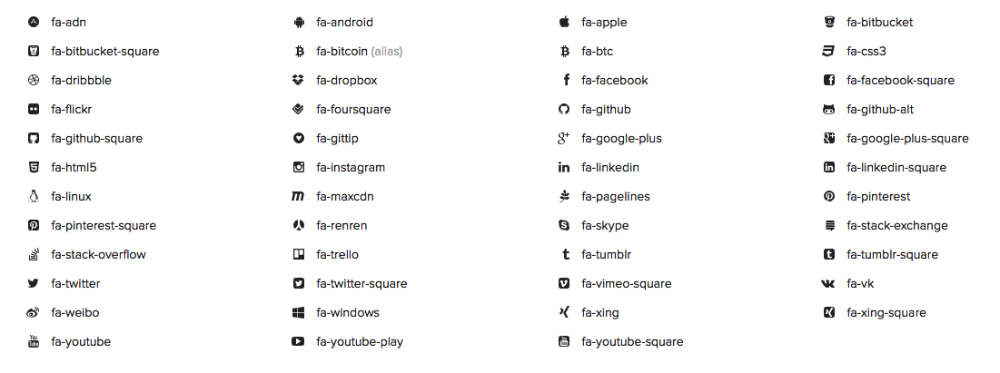

Created: 04/01/2014
By: James Duquenoy
Email: septimusfossett@gmail.com
Thank you for purchasing this theme! Hopefully any problems should be sorted out here, but if you still have unanswered questions send us an email at septimusfossett@gmail.com or post a comment on this item's Themeforest page.
This error pack includes the error pages for 404, 403, 401, 500 and 503 errors. All the files for this pack are enlcosed in folders - the files for each error type are also in their own folders - it's fairly self-explanatory. In each folder for the error types there is an index.html and index.php file, both of which show exactly the same content, however the PHP file uses a little PHP code to generate random letters to fill out the wordsearch. Just in case you aren't using this on a server that has PHP, I've made the HTML file which just uses some random letters typed in by me.
All of the CSS code is held within a single file, called style.css found in the CSS folder.
In both the HTML and PHP files, the HTML code follows the general structure where all of the code for the major elements of the theme are grouped by comments. They are as follows:
<!-- === WORDSEARCH === --> ... some code ... <!-- === MAIN TEXT CONTENT === --> ... some code ... <!-- === SEARCH FORM === --> ... some code ... <!-- === NAVIGATION BUTTONS === --> ... some code ...
If you would like to edit the color, font, or style of any elements in one of these columns, you would do the following: (note this CSS is not relevant to this template)
#primaryContent a {
color: #someColor;
}
If you find that your new style is not overriding, it is most likely because of a specificity problem. Scroll down in your CSS file and make sure that there isn't a similar style that has more weight.
I.E.
#wrap #primaryContent a {
color: #someColor;
}
So, to ensure that your new styles are applied, make sure that they carry enough "weight" and that there isn't a style lower in the CSS file that is being applied after yours.
Finally, if you want the Favicon of your site to work, use it as you would normally by adding the filepath to your image to this section of the header:
<link rel="shortcut icon" href="/path/to/favicon.gif">
Like with the HTML Structure, comments are also used to split the CSS code up into sections. Again, if you're looking, for example, for the CSS code for the navigation buttons, it'll be under the section commented as 'Navigation Buttons'. It's all fairly self-explanatory. They are as follows:
/* === GENERAL === */ ... some code ... /* === WRAP === */ ... some code ... /* === MAIN TEXT CONTENT === */ ... some code ... /* === NAVIGATION BUTTONS === */ ... some code ... /* === WORDSEARCH === */ ... some code ... /* === SEARCH FORM === */ ... some code ... /* === RESPONSIVE CSS === */ ... some code ...The responsive css section at the bottom of the
style.css file contains mostly CSS Media Queries, which change CSS styles for certain elements depending on screen size. If for some reason you wanted to remove responsive functionality from the theme, simply remove that section of CSS code.
This 404 template uses JavaScript, mostly the jQuery JavaScript Library, which adds more functionality to standard JS while reducing the amount of code needed. You can find more information about jQuery here. The jQuery library is imported into the theme by the following line of code in the header:
<script type="text/javascript" src="js/jquery.js"></script>
There is also a fair amount of Javascript (and jQuery) code in the headers of each error page. These segments of code aren't placed in external JS files because they need to be on the page itself - also the jQuery lines which control the animations of the wordsearch are different for each error page, so to save having multiple files for each instead the jQuery code is in the header of each.
There are comments next to each line of jQuery which controls the animation for the wordsearch letters, identifying which letter is being animated. For example:
/* 4 */ $(this).delay(1500).queue(function(){ $( ".one" ).addClass("selected"); $(this).dequeue(); })
/* 0 */ .delay(500).queue(function(){ $( ".two" ).addClass("selected"); $(this).dequeue(); })
/* 4 */ .delay(500).queue(function(){ $( ".three" ).addClass("selected"); $(this).dequeue(); })
To explain this simply, after the comment we set the delay between the previous animation with .delay(), then run the jQuery functions that add the CSS class .selected to the individual letter's LI element, then we tell jQuery to move on to the next line of animation code.
It's worth noting that each letter we are animating has a CSS class such as '.one', '.two' etc, so that we can animate them individually from jQuery. So, if you change the wordsearch letters being animated to have longer words, make sure each letter you want to animate has a 'number' class, assigned in the HTML (see example below) and also correctly pointed to in the jQuery. If you need help changing the wordsearch animations, please feel free to send me an email and I'll talk you through it.
<li class="one"></li>
The rest of the jQuery code in the header of each error page is for making sure the Wordsearch stays a perfect square, keeping each wordsearch LI element the same size and square-shaped, and also for making sure the text inside the wordsearch resizes responsively.
As explained in the Files Included section, for each error type there is a index.php and index.html file. In the index.php file there is some extra PHP code which generates random letters to fill up the wordsearch.
In the header of the file, you'll see one line of PHP code:
<?php $letters_array = range("a","z"); ?>
This is the line of code that generates a sequence of letters (called an array) ranging from A to Z. This means that all the letters of the alphabet are stored in an array called $letters_array. Now we can extract random letters from that array and put them into the wordsearch.
Inside the LI elements of the wordsearch not filled up with error message letters (404 for example), you'll notice they contain the following line of PHP code:
<?php echo $letters_array[array_rand($letters_array)]; ?>This line selects a random letter from the
$letters_array array using the array_rand() function. This function chooses a random part of the array (called the 'key') which is a number, but which we convert to its corresponding letter by feeding it back through the array and outputting the random letter using PHP echo. If you want any more random letters any where, just copy and paste that line of code to wherever you want the letters generated - but make sure you have the line of PHP in the header or nothing will work.
It's relatively simple to customise the normal text in this theme, but it is slightly more complicated to change the text shown in the Wordsearch grid. As you can see in the HTML file, there are around 64 LI elements that make up each individual cell in the wordsearch grid. Most of these contain the PHP code <?php echo $chars[rand(0,strlen($chars)-1)]; ?>, which is used to generate random letters in keeping with the priciples of a wordsearch. Among the long list of random letters (in the HTML files) or lines of PHP code to generate random letters (in PHP files) there are a few LI elements with classes such as "one", "two" etc. containing the letters to be animated (i.e. 404 page not found). If you want to change these, bear in mind you need to work out which Li to change so they show up in the correct place in the grid. Also, use the class system to number the letters in the order you want them to animate, and make sure you add or remove the appropriate numbers from the jQuery code at the top of the pages as mentioned in the Javascript & jQuery section. Bear in mind that CSS will force the letters you enter to be uppercase.
If you need help changing the wordsearch animations, please feel free to send me an email and I'll talk you through it.
<!-- === NAVIGATION BUTTONS === -->. The buttons are standard HTML links, so you can type in the URL to your content inbetween the href="" part. If you add more links, make sure each A element has the .navigation class. Simply type the content of the button inbetween the A tags, for example: <a>YOUR CONTENT</a><a class="navigation" href="http://google.co.uk">Google</a>As you may be aware, the CSS icon font Font Awesome is used in this pack for social icons which can be used in navigation buttons. The HTML for the links are the same, and you put the URL to your social network in the same place as before, but instead of typing words for the value of the buttons you use the Font Awesome code to generate the icons. Here's example code for a Twitter icon button:
<a class="navigation" href="http://twitter.com/Septimusfossett"><i class="fa fa-twitter"></a>The code that generates the icon is
<i class="fa fa-twitter">, a HTML element used to make text italic. All of the CSS for font awesome and the font files are held in the Font Awesome folder, and there is no need to edit any of it. There are certain names for different social icons, but mostly the classes match the name of the social network - but remember to include the Font Awesome classes such as fa fa-SOCIALNETWORKNAME otherwise the icon's won't work. Here is example code for some major social networks:
<a class="navigation" href="YOUR-TWITTER-URL"><i class="fa fa-twitter"></a> <a class="navigation" href="YOUR-FACEBOOK-URL"><i class="fa fa-facebook"></a>It's fairly self explanatory, and you can see all of the social and other icons available in Font Awesome by using the Font Awesome Cheat Sheet, or look at the picture below (but remember the
fa then space, then the classes listed below!).

It's very important that you ensure that your webhost allows custom error pages, but as you've just bought this theme then hopefully that is not a problem!
A .htaccess (HyperText Access) is a configuration file used by web servers to control and configure your server. It has many uses and features, such as blocking IPs, rewriting long, unattractive domains and many more, but we're only interested in the part allowing you to add custom error pages instead of the default, ugly ones.
The first step is to find the root directory (where your homepage is) on your server, and if it is not already there create a new blank text file with a simple editor like Notepad on Windows. Save your new file as ".htaccess". Make sure you start the filename with a dot, so that the file remains hidden. If your OS won't let you start a filename with a dot, make it without then rename it later, once it is on your server (for example with FTP). Make sure you rename and remove any file extension such as ".txt".
To make your .htaccess file point to your new error pages, just add the following line of code (for 404 error):
ErrorDocument 404 /errors/404/index.html
Starting the file path with a slash tells the server to look in the root directory of your server, then follow it up with the appropriate location of your error pages.
Note: Don't include a full URL (for example "http://www.yourdomain.com"), as this will cause errors in the .htaccess file.
Finally save and upload the .htaccess file, and ensure that your server is set up to allow custom error pages, and has them enabled.
Below is the appropriate code to enter in your .htaccess file for each error type included in this pack (make sure each is on a new line):
ErrorDocument 401 /errors/401/index.php
ErrorDocument 403 /errors/403/index.php
ErrorDocument 404 /errors/404/index.php
ErrorDocument 500 /errors/500/index.php
ErrorDocument 503 /errors/503/index.php
Once again, thank you very much for purchasing this theme, and I hope it serves you well!
If you still have unanswered questions, we'd be more than happy to try and sort things out by email - feel free to send us one at: septimusfossett@gmail.com, and we'll get back to you as soon as we can (which shouldn't be too long).
Another great way to get help is by posting a comment on the Themeforest page where you bought this theme. Alternatively, you might want to consider visiting the Themeforest forums and asking your question in the "Item Discussion" section. Many thanks once again!
James Duquenoy
Also Available on Themeforest | Go To Table of Contents ↑